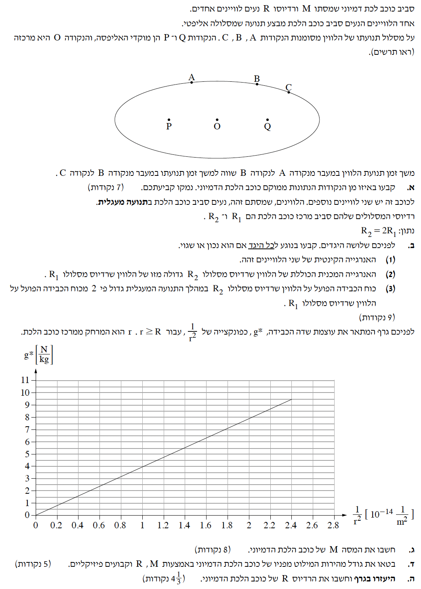

פתרון מלא ומודרך צעד-אחר-צעד, כולל הסברים ושרטוטים.

מכיוון שזמן התנועה שווה (\( t_{AB} = t_{BC} \)), המרחק שהלוויין עובר בכל קטע מעיד על גודל המהירות הממוצעת שלו באותו קטע. מהתבוננות בתרשים, ניתן לראות כי אורך הקשת \( AB \) גדול מאורך הקשת \( BC \). מכאן נובע שהמהירות הממוצעת של הלוויין בקטע \( AB \) גדולה מהמהירות הממוצעת שלו בקטע \( BC \).
על מנת שהמהירות תקטן עם התקדמות הלוויין לאורך המסלול \( A \to B \to C \), הלוויין חייב להתרחק בהדרגה מכוכב הלכת (המרחק הרדיאלי גדל). אם כוכב הלכת היה ממוקם במוקד \( Q \), תנועת הלוויין בכיוון זה הייתה מקרבת אותו אל הכוכב, מה שהיה גורם לגודל המהירות לגדול ולאורכי הקשתות לגדול בהתאמה, בניגוד למה שמשורטט. לעומת זאת, אם כוכב הלכת ממוקם במוקד \( P \), הלוויין הנע במסלול \( A \to B \to C \) הולך ומתרחק מן המוקד, ולכן גודל מהירותו קטן לאורך הדרך, מה שתואם את אורך הקשתות בתרשים.
מסקנה: כוכב הלכת הדמיוני ממוקם בנקודה P.
(1) ההיגד: "האנרגיה הקינטית של שני הלוויינים זהה."
לפי נוסחת האנרגיה הקינטית, \( E_k \) נמצאת ביחס הפוך לרדיוס המסלול \( r \). מכיוון ש- \( R_2 > R_1 \), המחנה של הלוויין השני גדול יותר, ולכן האנרגיה הקינטית שלו קטנה יותר מזו של הלוויין הראשון. לכן, ההיגד שגוי.
(2) ההיגד: "האנרגיה המכנית הכוללת של הלוויין שרדיוס מסלולו \( R_2 \) גדולה מזו של הלוויין שרדיוס מסלולו \( R_1 \)."
האנרגיה המכנית הכוללת מוגדרת תמיד כערך שלילי במערכת כבידתית סגורה. הביטוי תלוי ב- \( \frac{1}{r} \). מכיוון ש- \( R_2 > R_1 \), הערך המוחלט של האנרגיה ב- \( R_2 \) קטן יותר מהערך המוחלט ב- \( R_1 \). מכיוון שהסימן הוא שלילי, משמעות הדבר היא שהאנרגיה פחות שלילית (קרובה יותר לאפס). מתמטית, מספר שלילי קטן יותר בערכו המוחלט הוא מספר גדול יותר, ולכן \( E_2 > E_1 \). לכן, ההיגד נכון.
(3) ההיגד: "כוח הכבידה הפועל על הלוויין שרדיוס מסלולו \( R_2 \) מהלך התנועה המעגלית גדול פי 2 מכוח הכבידה הפועל על הלוויין שרדיוס מסלולו \( R_1 \)."
על פי חוק הכבידה של ניוטון, כוח המשיכה הפועל בין שני גופים נמצא ביחס הפוך לריבוע המרחק ביניהם. מבחינה פיזיקלית, משמעות הדבר היא שככל שנתרחק מכוכב הלכת, כך השפעתו הכבידתית תלך ותחלש. מכיוון שמסות הלוויינים זהות, הלוויין שמסלולו מרוחק יותר (\( R_2 > R_1 \)) בהכרח מרגיש כוח כבידה חלש יותר מאשר הלוויין הקרוב. לכן, הטענה שכוח הכבידה "גדול פי 2" במרחק רב יותר היא שגויה מיסודה קונספטואלית, עוד לפני שאנו מבצעים חישוב מתמטי כלשהו (שאגב, יוכיח כי הכוח למעשה קטן פי 4 ולא פי 2). לפיכך, ההיגד שגוי.
מסקנה: היגד (1) שגוי. היגד (2) נכון. היגד (3) שגוי.
תחילה נפתח את הביטוי לעוצמת שדה הכבידה (\( g^* \)) מתוך דף הנוסחאות. נשווה בין כוח הכבידה העולמי הפועל על גוף בעל מסה \( m \), לבין משקל הגוף:
כעת נסדר את הביטוי במבנה של משוואת קו ישר העובר בראשית הצירים (\( y = ax \)), בהתאמה לצירי הגרף הנתון (ציר ה-\( y \) הוא \( g^* \) וציר ה-\( x \) הוא \( \frac{1}{r^2} \)):
מכאן אנו למדים ששיפוע הגרף (אותו נסמן כ-\( \text{Slope} \)) שווה לביטוי \( GM \).
כדי למצוא את השיפוע, נבחר שתי נקודות קריאות ומדויקות על הגרף. הגרף עובר בראשית הצירים לכן ניקח את \( (0,0) \). נקודה נוספת מדויקת בקצה הגרף היא \( x = 2.4 \) ו- \( y = 9.5 \). חשוב מאוד לא לשכוח את סדר הגודל של ציר ה-\( x \) שהוא \( 10^{-14} \).
נשווה את השיפוע לביטוי ונקבל את מסת הכוכב \( M \):
נעגל את התוצאה ל-3 ספרות מהותיות.
מסקנה: מסת כוכב הלכת היא \( M = 5.93 \cdot 10^{24} \, \mathrm{kg} \).
מהירות מילוט \( v_{\text{esc}} \) מוגדרת כמהירות המינימלית הדרושה לגוף על מנת להשתחרר משדה הכבידה של הכוכב, כלומר להגיע למרחק אינסופי (\( r \to \infty \)) עם מהירות סופית שואפת לאפס (\( v = 0 \)).
נרשום את חוק שימור האנרגיה בין נקודת השיגור על פני הכוכב (מצב 1) לבין האינסוף (מצב 2):
נציב את הביטויים עבור כל מצב:
מסת הגוף \( m \) מצטמצמת מכיוון שהיא מופיעה בכל האיברים השונים מאפס. נעביר את איבר האנרגיה הפוטנציאלית לאגף ימין:
נכפיל פי 2 ונוציא שורש ריבועי כדי לבודד את מהירות המילוט:
מסקנה: \( v_{\text{esc}} = \sqrt{\frac{2GM}{R}} \)
העיקרון המנחה הוא הבנת הקשר בין צירי הגרף לבין תחומי ההגדרה הפיזיקליים. ציר ה-\( x \) מייצג את ההופכי לריבוע המרחק \( \frac{1}{r^2} \). מכיוון ש- \( r \ge R \), הערך הגדול ביותר של הביטוי \( \frac{1}{r^2} \) מתקבל כאשר המכנה קטן ביותר, כלומר כאשר \( r = R \) בדיוק על פני הכוכב. בנקודה זו שדה הכבידה הוא מקסימלי.
מכאן עולה כי נקודת הסיום של הגרף בחלק הימני העליון שלו (ערך ה-\( x \) המקסימלי המופיע בקו הרציף) מתאימה למצב שבו האובייקט נמצא על פני הכוכב ממש.
מהתבוננות מדוקדקת בגרף, ניתן לראות שהקו מסתיים בדיוק בשיעור \( x \) של:
נחלץ את ה-\( R^2 \):
נוציא שורש ריבועי כדי לקבל את רדיוס הכוכב \( R \):
נעגל ל-3 ספרות מהותיות כמקובל.
מסקנה: רדיוס כוכב הלכת הדמיוני הוא \( R = 6.45 \cdot 10^6 \, \mathrm{m} \).